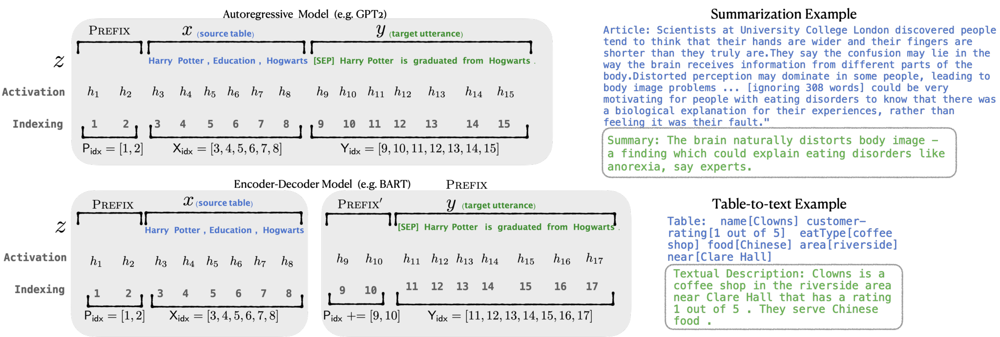

LLM 提示微调：Prefix-Tuning、Prompt Tuning 与 P-Tuning 的方法谱系¶
简述：通过学习输入提示或各层注意力前缀，引导共享语言模型完成任务；本篇比较四种代表方法及其训练、效果和部署取舍。
papers：Prefix-Tuning、Prompt Tuning、P-Tuning / GPT Understands, Too、P-Tuning v2
code：Prefix、Prompt、P-Tuning、v2
backbone：GPT-2、BART、T5、BERT/RoBERTa、GLM 等 · date：核心预印本 2021 年；v2 于 ACL 2022 发表
modality / languages：文本；本文引用的核心实验主要是英语，不能直接推广为现代多语言聊天模型的结论。
研究简介¶
为每个任务训练和保存一份大模型代价很高，手写提示又难以稳定利用训练数据。提示微调把任务指令变成可学习向量：Prompt Tuning 仅训练输入层的软提示，Prefix-Tuning 直接提供逐层前缀，P-Tuning 借助提示编码器学习连续模板，v2 再将深层提示适配到分类和序列标注。四篇论文分别在结构化生成、摘要、SuperGLUE、知识探测和抽取任务上展示了参数效率，但效果依赖模型规模、预训练目标、插入层次与是否联合训练基座。它们节省任务参数和优化器状态，仍需通过主干反向传播，并带来提示长度或 KV 开销；因此实际选型应结合任务结构、服务支持与数据规模。
先区分三件容易混淆的事¶
Prompt Engineering 是设计可读的离散文本，通常无需梯度训练；In-context Learning 将说明和示例放入上下文，示例影响当前推理，但不更新参数。Soft Prompt Tuning 则使用标注数据和反向传播，学习不必对应词表中任何词的连续向量，训练后把这些向量作为任务参数保存。
中文里说“P-Tune”通常指 P-Tuning，需要进一步说明是 v1 还是 v2。“Prompt tuning”有时泛指这一类方法，有时专指 Lester 等人的输入层方案；“prefix”也可能只是自然语言前缀，不能仅凭名字判断实现。
SFT、DPO、RL 等描述训练目标或流程；LoRA、Prompt/Prefix 等描述可训练参数的形式。二者不是互斥分类。例如用监督交叉熵训练软提示仍然属于监督微调，而不是与 SFT 并列的另一种损失。
从改哪里理解整个谱系¶
| 方法 | 任务参数放在哪里 | 主干是否冻结 | 核心差异 |
|---|---|---|---|
| Prompt Tuning（Lester） | 输入 embedding 前的连续向量 | 是 | 只学习输入层提示，结构最简单 |
| Prefix-Tuning | 各层前缀激活，常以注意力 K/V 表示 | 是 | 直接影响多层注意力；训练可用 MLP 重参数化 |
| P-Tuning v1 | 输入模板中的连续提示，经提示编码器生成 | 可冻结，也可联合微调 | 结合连续模板、离散锚点和标签词；部分关键实验训练主干 |
| P-Tuning v2 | 各层连续前缀，加任务输出头 | 是，另训练提示和任务头 | 把深层提示系统适配到 NLU、序列标注和较小模型 |
| LoRA | 原有线性变换旁的低秩权重增量 | 是 | 改变线性映射；浮点合并后可无独立分支 |
| Adapter | Transformer 层间的瓶颈网络 | 通常冻结主干 | 新增非线性模块，存在额外串行运算 |
输入层方案通过模型自己把提示传播到高层；深层方案直接提供每层的任务条件。后者参数更多、接口更复杂，但降低了任务信号必须穿过所有层的间接性。v2 不是首次发明逐层提示，原文明确将自己定位为面向 NLU 的深层提示实现与系统实证。
Prompt Tuning：只学习一小段输入向量¶
Lester、Al-Rfou、Constant 的 The Power of Scale for Parameter-Efficient Prompt Tuning（EMNLP 2021）将任务统一成 text-to-text。设输入词向量为 \(E(x)\in\mathbb R^{n\times d}\)，软提示为 \(P\in\mathbb R^{m\times d}\)：
只优化 \(P\)，冻结 \(\theta_0\)。这段提示是任务级参数，通常供同一任务所有样本共享，不是每个输入都单独优化一份。分类标签被写成待生成的文本，因此仍沿用模型的语言建模输出路径。
任务参数约为 \(md\)。例如提示长 100、维度 4096 时约有 41 万参数；将长度缩至 5 则约为 2 万参数。向量从连续空间学习，不能可靠地解释为一条能复制到普通聊天框中的自然语言指令。

横轴是模型总参数，纵轴是 SuperGLUE 分数。输入层提示在小 T5 上明显落后于模型微调，到 T5 XXL（11B）时接近强基线。蓝线是 GPT-3 的少样本离散提示，预训练、架构和训练信号均不同，不构成相同模型上的受控比较。
结果为何依赖预训练目标¶
作者使用 T5.1.1，并将它继续做最多 100K 步 LM adaptation，使其更习惯自然输入和自然输出。原来的 span corruption 训练要求输出 sentinel 和被遮盖片段，冻结模型后仅靠提示不容易纠正这种输出偏好。LM adaptation 是一次可复用的基座训练成本；之后各任务的 prompt tuning 才冻结基座。
默认实验使用 100 个提示向量、类别标签初始化、Adafactor、学习率 0.3、batch 32、30K 步，并在开发集选择 checkpoint。0.3 是这一优化器和参数化下的论文设置，不能直接作为 LoRA 或任意框架的默认学习率。长度、初始化和基座目标的消融都影响结果；大模型对这些选择相对宽容。
领域迁移也并非只看同域分数。原论文表 1 在 SQuAD 训练后，TextbookQA 的 F1 从全量模型微调的 54.3 提升至提示微调的 66.8，但 DuoRC 从 68.9 降至 67.7、DROP 从 68.9 降至 67.1。提示可能减少过拟合，却没有提供普遍的域外优势保证。
Google Research 的作者博客（2022-02-10）进一步解释了共享基座与混合任务批处理，并报告 QQP→MRPC 的准确率从 73.1 到 76.3。这个 +3.2 是特定转移方向的准确率差，不能等同于所有任务的泛化增益。
Prefix-Tuning：把可学习条件放到每一层¶
Li、Liang 的 Prefix-Tuning: Optimizing Continuous Prompts for Generation（ACL 2021）主要针对条件生成。它不只在输入处加入 embedding，而是直接优化前缀在各层的激活。解码器自注意力的常见表示为
真实 token 的查询可以读取任务前缀 \(K_P,V_P\)。这里是用于理解的单个注意力模块公式；encoder-decoder 模型还需分别考虑编码器、解码器以及相关注意力接口，不是所有架构都只加一组缓存就足够。

原图把任务前缀、输入和目标的激活位置分开：GPT-2 通过前缀控制结构化数据到文本的生成，BART 在编码与解码路径中引入前缀完成摘要。前缀参与条件化，训练损失主要针对目标序列，不能把这些虚拟位置当成额外标注文本。
直接优化全部前缀激活容易不稳定，作者用较小提示矩阵经 MLP 生成前缀。训练完成后可物化生成出的前缀，移除只为重参数化服务的 MLP。若提示依赖输入，便不能直接采用这种一次预计算；原文的任务级前缀通常不随样本变化。
生成任务上的收益与代价¶
E2E 是餐馆属性到描述，WebNLG 将三元组转成文本，并包含未见类别；DART 是更开放域的结构化生成。XSUM 则将较长新闻压成一句摘要。前者需要忠实覆盖给定信息，后者还要从文章中选择重点，两类任务的适配难度不同。
原论文表 1/2 的代表结果：
| 模型 / 任务 | 全量微调 | Prefix-Tuning | 指标与设置 |
|---|---|---|---|
| GPT-2 Medium / E2E | 68.2 | 69.7 | BLEU；Prefix 约 0.1% 任务参数 |
| GPT-2 Medium / DART | 46.2 | 46.4 | BLEU；同一表中的配置 |
| GPT-2 Large / E2E | 68.5 | 70.3 | BLEU |
| BART Large / XSUM | 37.25 | 36.05 | ROUGE-L；Prefix 约 2% |
| BART Large / XSUM | 37.25 | 35.05 | ROUGE-L；Prefix 约 0.1% |
表格支持结构化生成中较好的参数效率，也明确显示摘要存在差距。低资源和未见主题实验中，Prefix 在原文设置下展现优势，但不能把“约 0.1%”当成全部任务统一所需的参数量。
P-Tuning v1：用连续模板代替离散提示搜索¶
Liu 等人的 GPT Understands, Too（2021）研究如何让 GPT 等模型完成自然语言理解。它将可学习伪 token 放进模板，例如在输入和标签位置周围混合连续提示与“capital”等离散锚点，使用提示编码器把提示参数映射成 embedding。

左图在词表中找提示，得到离散反馈；右图用连续向量建立到损失的可微路径。原文讨论 LSTM、MLP 和直接映射等提示编码方式，编码器用于建模提示向量间的关系；它通常编码提示参数本身，不能自动理解成“读取每条问题后动态生成提示”的网络。
分类时常用 verbalizer，将标签映射成词，例如以 [MASK] 位置上 “good/bad” 的概率表达情感标签。模板、标签词与连续向量共同影响结果，语言建模能力如何转成判别预测是这一方法的重要部分。
冻结与联合微调必须分开看¶
原论文表 3 的知识探测（LAMA）冻结模型，报告 P@1，即预测的第一候选是否命中事实答案。在同一上半表中，BERT-base 的手写提示为 31.1，AutoPrompt 为 43.3，P-Tuning 为 48.3；BERT-large 的手写提示为 32.3，P-Tuning 为 50.6。表的不同部分有不同评测口径，不应把其 48.3 和另一区块的 52.3 混作同一个结果。
SuperGLUE 的部分重要实验则联合更新主干。例如原论文表 4 的全监督 GPT-2 Base：CLS-FT 平均 63.0、PET-FT 70.2、P-Tuning 70.4；BERT Base 分别为 66.2、67.1、68.4。这些结果说明连续模板有助于任务表达，不能据此声称“只训练很少参数就获得了 70.4”。
知识探测检验从冻结模型中引出已有事实，SuperGLUE 检验多种 NLU 任务；二者不等同于向模型写入新知识，也没有直接验证今天长回答指令跟随的效果。
P-Tuning v2：深层提示与任务头让 NLU 更普遍可用¶
P-Tuning v2 在输入层提示对较小模型和序列标注不够有效的问题上继续推进。它在各层加入连续提示，冻结主干，训练提示和分类头。抽取式问答预测起止位置，NER 预测每个 token 的类别，不再强制将所有任务挤进一个标签词填空模板。

右图的每层任务参数更直接地作用于相应层；输出使用线性任务头。MLP 重参数化和多任务初始化是可选实现细节，原文发现它们的收益具有任务依赖。一般分类偏好较短提示，较难序列标注偏好较长提示，但原文的“少于 20”或“约 100”应视为被测任务的经验。
该预印本在 ACL 2022 的正式发表标题为 P-Tuning: Prompt Tuning Can Be Comparable to Fine-tuning Across Scales and Tasks，与 v1 的 GPT Understands, Too 是不同论文。
跨模型规模的结果¶
下表摘自原论文表 2，FT 为全量微调，PT 为表中输入层提示基线，PT-2 为 v2；均为全监督、冻结提示方法的基座，分数采用原表指标：
| 模型 | BoolQ FT / PT / PT-2 | RTE FT / PT / PT-2 |
|---|---|---|
| BERT Large，335M | 77.7 / 67.2 / 75.8 | 70.4 / 53.5 / 78.3 |
| RoBERTa Large，355M | 86.9 / 62.3 / 84.8 | 86.6 / 58.8 / 89.5 |
| GLM XL，2B | 88.3 / 79.7 / 87.0 | 90.3 / 85.6 / 90.3 |
| GLM XXL，10B | 88.7 / 88.8 / 88.8 | 93.1 / 89.9 / 93.1 |
较小模型中 v2 明显缩小了提示微调的差距，RTE 甚至超过 FT；大模型中输入层方案本身也更有竞争力。不过 BoolQ 的若干模型仍低于 FT，不能把标题中的 “universally” 解释成所有分数完全相等。
序列任务的结果¶
原论文表 3 的 RoBERTa Large 上，CoNLL03 NER 的 FT / PT / PT-2 F1 为 92.6 / 86.1 / 92.8；SQuAD 1.1 开发集 F1 为 94.6 / 12.0 / 94.4。深层提示显著缓解了输入层提示在抽取任务中的困难。
但 BERT Large 的 SQuAD 1.1 F1 仍为 FT 91.1、PT-2 86.0，SQuAD 2.0 也存在明显差距。论文主要覆盖约 300M–10B 的双向 NLU 模型与全监督任务；它并不证明任何解码器聊天模型、少样本学习或生成任务都能用同样配置替代全量训练。
参数少与训练快是不同问题¶
对标准多头注意力，输入层提示约有 \(md\) 个参数；为 \(L\) 层分别存 K/V 前缀，粗略为 \(2Lmd\)，不含重参数化网络、任务头及 encoder-decoder 额外模块。采用 GQA/MQA 的现代架构，K/V 维度小于查询维度，应改用实际 KV 头数计算。
例如 \(L=32,m=20,d=4096\) 时，输入提示有 81920 个参数，标准 MHA 的逐层 K/V 前缀约为 5242880 个，按 BF16 约为 10 MiB。后者是任务前缀本身的表示大小，不是整个模型显存，也未计 batch 扩展与运行时缓存布局。
冻结权重省掉对应梯度和优化器状态，但仍需经过主干反向传播。输入层提示增加输入位置；深层前缀增加每层的键值位置和注意力读取开销，是否占用实现中的位置预算取决于模型接口。它们一般不能像浮点 LoRA 一样直接加到 \(W\) 上删除提示路径。多任务可共享基座，但能否在同一 batch 高效混合任务还依赖框架支持。
技术博客与官方文档补充了哪些实践信息¶
| 来源 | 对阅读论文的补充 | 应保留的边界 |
|---|---|---|
| Google Research：Guiding Frozen Language Models with Learned Soft Prompts，2022-02-10 | 作者解释初始化、LM-adapted T5、共享基座和跨任务批处理 | 是作者对同一研究的说明，不算独立复现 |
| Hugging Face：Parameter-Efficient Fine-Tuning using PEFT，2023-02-10 | 介绍共享冻结模型、适配器存储与 Transformers 集成 | 不同方法的速度与显存受上下文和后端影响 |
| Hugging Face：四位量化与 QLoRA，2023-05-24 | 说明低位存储与高精度计算可以并存，帮助理解 PEFT 与量化的组合 | 量化是另一维度，不能把所有提示方法自动称为 QLoRA |
| Thinking Machines：LoRA Without Regret，2025-09 | 从数据容量、目标层和优化设置解释为什么要建立强 LoRA 对照 | 研究的是其 SFT/RL 设置，不能作为 Prompt/Prefix 的直接性能排名 |
PEFT PromptTuningConfig、PrefixTuningConfig、PromptEncoderConfig 分别提供对应接口。重点关注 num_virtual_tokens、提示初始化、prefix_projection 和提示编码器类型，以及实际保存哪些任务头。PEFT 中的 P_TUNING 指输入层提示编码器路径；它不会仅因名称相似就自动变成 P-Tuning v2 的逐层方案。具体模型对这些接口的支持以对应版本为准。
一个输入层提示的配置示意如下，只表示 API 概念，不是已运行的训练结果：
from peft import PromptTuningConfig, PromptTuningInit, TaskType, get_peft_model
config = PromptTuningConfig(
task_type=TaskType.CAUSAL_LM,
num_virtual_tokens=20,
prompt_tuning_init=PromptTuningInit.RANDOM,
)
# base_model 必须是框架支持的、已加载的语言模型。
model = get_peft_model(base_model, config)
model.print_trainable_parameters()
接入训练循环时，还需正确处理标签掩码、padding、截断和生成缓存；不能只替换配置类便认为训练目标与服务接口都已经一致。保存适配器后也应记录基座版本、tokenizer、提示位置和任务头，否则提示向量无法脱离这些依赖可靠复用。
还值得放进微调地图的技术¶
Houlsby Adapter（2019）通过瓶颈模块学习任务变换，是增量模块路线的重要起点。BitFit（2021）只更新已有 bias，是选择性微调而非新增提示；现代部分模型没有相同的 bias 结构，需要检查可训练对象。IA³ / T-Few（2022）学习少量向量，对注意力 key/value 与前馈激活进行缩放，其少样本训练配方也不应与向量参数化混为一谈。
AutoPrompt（2020）利用梯度引导搜索离散触发词，是从手写提示通向可学习提示的一条前置路线。它输出词表中的 token，与连续软提示的可表示空间不同。需要跨任务迁移时还可进一步阅读 SPoT: Better Frozen Model Adaptation through Soft Prompt Transfer（2021 预印本，ACL 2022）：复用已学提示作为新任务初始化，而不只是从随机向量开始。
如何选择一个有意义的起点¶
如果只有文本 API、不能访问 embedding 或梯度，先做离散提示、示例组织或检索增强；这类接口通常无法直接训练或传入任意软提示。若可控制模型且目标是许多小任务共享基座，输入层 Prompt Tuning 是结构简单的基线，但需要留意模型规模、任务输出形式和初始化。若输入层方案在较小 NLU 模型或序列标注上效果不足，逐层提示与任务头更值得尝试。
对现代解码器指令微调，应同时建立调好目标层与学习率的 LoRA 基线。提示方法的优势可能来自更小的任务存储和共享服务；LoRA 的优势可能来自成熟训练支持与可合并部署，不能仅按参数量决定。若显存瓶颈是冻结权重，可再考虑量化；若瓶颈是长上下文激活，仅缩小任务参数不会解决全部问题。
实际比较应固定基座、数据拆分和任务指标，报告各方法自己的调参预算，并分别测量任务质量、训练峰值显存、吞吐、任务 checkpoint 大小和推理延迟。原论文跨架构的历史结果用于解释方法，不适合直接拼成今天的排行榜。
参考论文与继续阅读¶
- Li & Liang. Prefix-Tuning: Optimizing Continuous Prompts for Generation，ACL 2021；逐层前缀、生成任务、重参数化。
- Lester et al. The Power of Scale for Parameter-Efficient Prompt Tuning，EMNLP 2021；输入层提示、T5 规模与目标消融。
- Liu et al. GPT Understands, Too，2021；连续模板、知识探测和冻结/联合微调实验。
- Liu et al. P-Tuning v2 / ACL 正式版，2022；深层提示、任务头与 NLU 的跨规模验证。
- Houlsby et al. Parameter-Efficient Transfer Learning for NLP；Ben Zaken et al. BitFit；Liu et al. Few-Shot Parameter-Efficient Fine-Tuning is Better and Cheaper than In-Context Learning。
- Shin et al. AutoPrompt；Vu et al. SPoT。